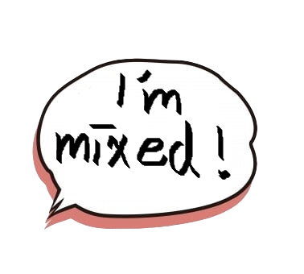
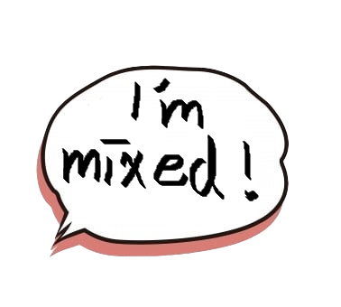
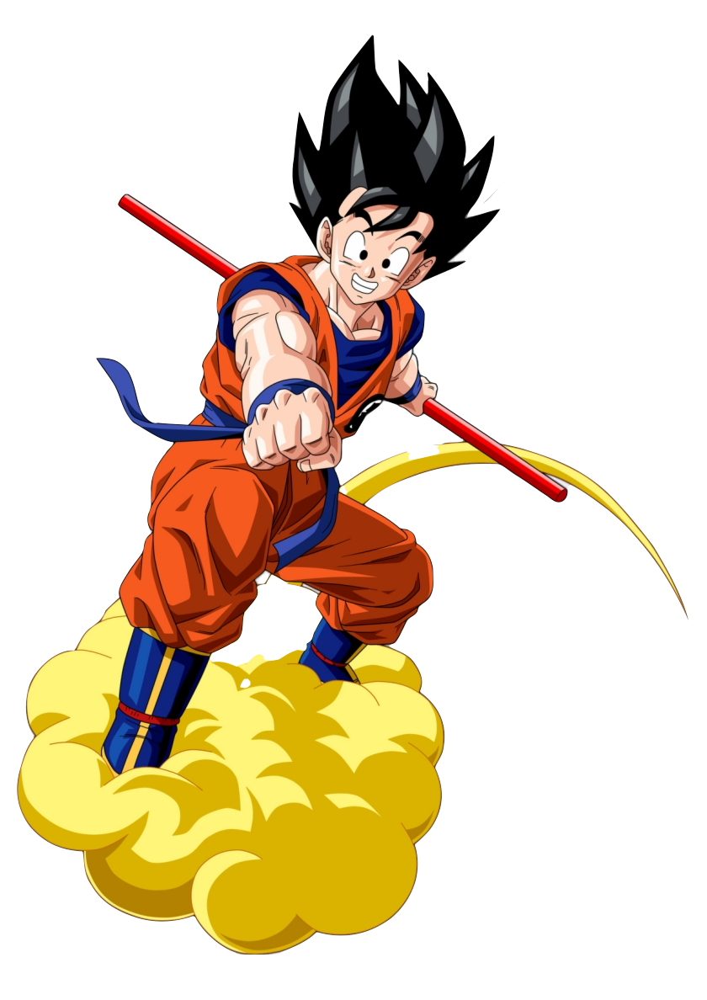

關於我 ! About me

簡述 :
嗨 ! 我的名字叫做歐益劭，目前就讀於台北市立成功高中302班，今年17歲 !
我是個混血兒，爸爸來自奈及利亞，媽媽是台灣人。
我兒時因為爸爸工作的關係在馬來西亞長大，到了小一才回台灣。
在雙語家庭下長大，英文其實也算是我的母語，
因此從小到大英文對我來說都不是一個特別需準備的科目~
也因為這樣，我在各階段的學習過程常有多餘的時間加強其他科目其他課外的事物 !
動機 :
從去年停課線上上課期間，我開始對我們能從網路上學習到的龐大資訊量感到驚奇，
也開始摸索各個面向的知識。因此接觸到了資訊這塊，並對它感到滿大興趣。
但我知道學習可能要花一段時間，就把學習的時間延到學測後的寒假完去學習。
後來開始看相關影片之後，發現寫網站其實滿好玩的，而且對未來的幫助，
不管往哪個方向發展真的都幫助滿大的~
我的優點 :
另外我認為自己是個對於有興趣的事物會勤奮學習的人，不會因為遇到小小的挫折就放棄學習，
如果我在學習上遇到問題，我一定會找出問題點，並且認真學習加強自己短版 !
而除此之外我也是個外向的人，喜歡和人進行交流，
我也是個懂得避免麻煩的人，處理各種事情都盡量大事化小，小事化無。